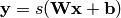
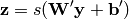
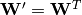
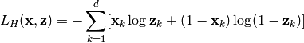
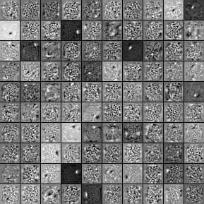
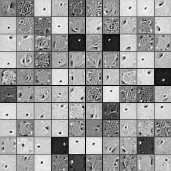

降噪自动编码机(Denoising Autoencoders)
这一节假设读者一节阅读了使用逻辑回归进行MNIST分类，多层感知机。如果你需要在GPU上跑代码，你也需要阅读GPU。
本节所有的代码都可用在这里下载。
降噪自动编码机(denoising Autoencoders)是经典自动编码机的扩展。它在Vincent08中作为深度网络的一个构建块被介绍。我们通过简短的自动编码机来开始本教程。
自动编码机
在Bengio09的第4.6节中，有自动编码机的简介。一个自动编码机，由d维的[0,1]之间的输入向量x，通过第一层映射（使用一个编码器）来获得隐藏的d‘维度的[0,1]的输出表达y。通过如下的决定性映射：

这里s是一个非线性的函数，例如sigmoid。这个潜在的表达y，或者码，被映射回一个重构机z，来重构x。这个映射通过下面的简单转换来实现：

（这里撇号不代表矩阵转置）当y被给定时，z被看着是对x的预测。可选的，这个权重矩阵W‘的逆映射可用被约束为正向映射的转置：，这被称为捆绑权重。这个模型的所有参数（W，b，b‘，或者不使用捆绑权重W’）通过优化最小平均重构误差来实现训练。
重建误差可以通过许多方法来度量，基于输入的分布假设。这个传统的平方误差是L(x,z)=||x-z||^2，可以被使用。假如这个输入是通过比特向量或者比特概率向量来表述，重构交叉熵([cross-entropy)可以被表示如下：

我们希望这样，这个编码y是一个分布式表达，可以捕捉数据中主要因子变化的位置。这就类似与主成分凸出，金额也捕捉数据中主要因子的变化。事实上，假如这里有一个线性隐藏层（这个编码），并且平均平方误差准则被用以训练这个网络，然后这k个隐藏单元学习去凸出这个输入，在该数据的前k个主成分的范围中。假如这个隐藏层是非线性的，这个自动编码机表现的是与PCA不同的，它有着捕捉输入分布的多模态方面的能力。从PCA开始变得更加重要，当我们考虑堆叠混合编码机(stacking multiple encoders，在Hinton06中被用以构建一个深度自动编码机)。
因为y是视为x的有损压缩(lossy compression)，它不可能对所有的x有好的压缩。优化可以使得训练样本有好的压缩，同时也希望对别的输入有好的压缩，但是不是对于任意输入。这里有一个对自动编码机的概括定义：它对于与训练样本有相似分布的测试样本有较低的重建误差，但对于随机的输入会有较高的重构误差。
我们希望通过Theano中来实现自动编码机，作为一个类的形式，它可以在未来去构建一个层叠自动编码机。这个第一步是去创建自动编码机的共享变量参数（W，b，b‘）。
class dA(object):
"""Denoising Auto-Encoder class (dA)
A denoising autoencoders tries to reconstruct the input from a corrupted
version of it by projecting it first in a latent space and reprojecting
it afterwards back in the input space. Please refer to Vincent et al.,2008
for more details. If x is the input then equation (1) computes a partially
destroyed version of x by means of a stochastic mapping q_D. Equation (2)
computes the projection of the input into the latent space. Equation (3)
computes the reconstruction of the input, while equation (4) computes the
reconstruction error.
.. math::
\tilde{x} ~ q_D(\tilde{x}|x) (1)
y = s(W \tilde{x} + b) (2)
x = s(W' y + b') (3)
L(x,z) = -sum_{k=1}^d [x_k \log z_k + (1-x_k) \log( 1-z_k)] (4)
"""
def __init__(
self,
numpy_rng,
theano_rng=None,
input=None,
n_visible=784,
n_hidden=500,
W=None,
bhid=None,
bvis=None
):
"""
Initialize the dA class by specifying the number of visible units (the
dimension d of the input ), the number of hidden units ( the dimension
d' of the latent or hidden space ) and the corruption level. The
constructor also receives symbolic variables for the input, weights and
bias. Such a symbolic variables are useful when, for example the input
is the result of some computations, or when weights are shared between
the dA and an MLP layer. When dealing with SdAs this always happens,
the dA on layer 2 gets as input the output of the dA on layer 1,
and the weights of the dA are used in the second stage of training
to construct an MLP.
:type numpy_rng: numpy.random.RandomState
:param numpy_rng: number random generator used to generate weights
:type theano_rng: theano.tensor.shared_randomstreams.RandomStreams
:param theano_rng: Theano random generator; if None is given one is
generated based on a seed drawn from `rng`
:type input: theano.tensor.TensorType
:param input: a symbolic description of the input or None for
standalone dA
:type n_visible: int
:param n_visible: number of visible units
:type n_hidden: int
:param n_hidden: number of hidden units
:type W: theano.tensor.TensorType
:param W: Theano variable pointing to a set of weights that should be
shared belong the dA and another architecture; if dA should
be standalone set this to None
:type bhid: theano.tensor.TensorType
:param bhid: Theano variable pointing to a set of biases values (for
hidden units) that should be shared belong dA and another
architecture; if dA should be standalone set this to None
:type bvis: theano.tensor.TensorType
:param bvis: Theano variable pointing to a set of biases values (for
visible units) that should be shared belong dA and another
architecture; if dA should be standalone set this to None
"""
self.n_visible = n_visible
self.n_hidden = n_hidden
# create a Theano random generator that gives symbolic random values
if not theano_rng:
theano_rng = RandomStreams(numpy_rng.randint(2 ** 30))
# note : W' was written as `W_prime` and b' as `b_prime`
if not W:
# W is initialized with `initial_W` which is uniformely sampled
# from -4*sqrt(6./(n_visible+n_hidden)) and
# 4*sqrt(6./(n_hidden+n_visible))the output of uniform if
# converted using asarray to dtype
# theano.config.floatX so that the code is runable on GPU
initial_W = numpy.asarray(
numpy_rng.uniform(
low=-4 * numpy.sqrt(6. / (n_hidden + n_visible)),
high=4 * numpy.sqrt(6. / (n_hidden + n_visible)),
size=(n_visible, n_hidden)
),
dtype=theano.config.floatX
)
W = theano.shared(value=initial_W, name='W', borrow=True)
if not bvis:
bvis = theano.shared(
value=numpy.zeros(
n_visible,
dtype=theano.config.floatX
),
borrow=True
)
if not bhid:
bhid = theano.shared(
value=numpy.zeros(
n_hidden,
dtype=theano.config.floatX
),
name='b',
borrow=True
)
self.W = W
# b corresponds to the bias of the hidden
self.b = bhid
# b_prime corresponds to the bias of the visible
self.b_prime = bvis
# tied weights, therefore W_prime is W transpose
self.W_prime = self.W.T
self.theano_rng = theano_rng
# if no input is given, generate a variable representing the input
if input is None:
# we use a matrix because we expect a minibatch of several
# examples, each example being a row
self.x = T.dmatrix(name='input')
else:
self.x = input
self.params = [self.W, self.b, self.b_prime]
注意，我们将input作为一个参数来传递给自动编码机。我们可以串联自动编码机来实现深度网络：第k层的输出(y)可以变成第k+1层的输入。
现在，我们可以预计去重构信号的潜在表达的计算量。
def get_hidden_values(self, input):
""" Computes the values of the hidden layer """
return T.nnet.sigmoid(T.dot(input, self.W) + self.b)
def get_reconstructed_input(self, hidden):
"""Computes the reconstructed input given the values of the
hidden layer
"""
return T.nnet.sigmoid(T.dot(hidden, self.W_prime) + self.b_prime)
然后我们通过这些函数可以计算一个随机梯度下降步骤的cost和更新。
def get_cost_updates(self, corruption_level, learning_rate):
""" This function computes the cost and the updates for one trainng
step of the dA """
tilde_x = self.get_corrupted_input(self.x, corruption_level)
y = self.get_hidden_values(tilde_x)
z = self.get_reconstructed_input(y)
# note : we sum over the size of a datapoint; if we are using
# minibatches, L will be a vector, with one entry per
# example in minibatch
L = - T.sum(self.x * T.log(z) + (1 - self.x) * T.log(1 - z), axis=1)
# note : L is now a vector, where each element is the
# cross-entropy cost of the reconstruction of the
# corresponding example of the minibatch. We need to
# compute the average of all these to get the cost of
# the minibatch
cost = T.mean(L)
# compute the gradients of the cost of the `dA` with respect
# to its parameters
gparams = T.grad(cost, self.params)
# generate the list of updates
updates = [
(param, param - learning_rate * gparam)
for param, gparam in zip(self.params, gparams)
]
return (cost, updates)
我们现在可以定义一个函数来实现重复的更新参数W，b，b‘，直到这个重构消耗大约是最小的。
da = dA(
numpy_rng=rng,
theano_rng=theano_rng,
input=x,
n_visible=28 * 28,
n_hidden=500
)
cost, updates = da.get_cost_updates(
corruption_level=0.,
learning_rate=learning_rate
)
train_da = theano.function(
[index],
cost,
updates=updates,
givens={
x: train_set_x[index * batch_size: (index + 1) * batch_size]
}
)
假设除了最小化重构误差外没有别的的限制，一个有n个输入和n（或者更大）维编码学习能力的自动编码机定义函数，将倾向于去映射出它的输入副本。这种自动编码机将无法从训练样本的分布中区分任何测试样例。（无效编码机：输出与输入完全相同）。
让人惊讶地，在Bengio07的实验指出，在实践中，当通过随机梯度下降训练时，有比输入更多的隐藏单元（称为超完备）的非线性的自动编码机可以产生有效的表达。（这里，有效指的是编码作为网络的输入获得了更低的分类误差）。
一个简单的解释是，使用early-stopping的随机梯度下降是与参数的L2正则化相似的。为了去实现对连续性输入有更好的重建，包含非线性隐藏单元的单隐藏层的自动编码机需要非常小的权值在第一（编码）层，以使得将非线性隐藏单元进入他们的线性区域（参考sigmoid函数），然后在第二（解码）层有更大的权值。对于二进制输入，非常大的权值也需要彻底的最小化重构误差。因为隐性的或者显性的正则化将使得获得大权值的解决方案变得困难，这个最优化算法发现在训练样本中表现好的编码。这意味着，表达是利用训练集的统计规律来实现的，而不仅仅是复制输入。
这里有其他方法，使得一个有比输入有更多隐藏单元的自动编码机，去避免只学习它本身，而是在输入的隐藏表达中捕捉到有用的东西。一个是添加稀疏性（迫使许多隐单元是0或者接近0）。稀疏性已经被很成功的发挥了Ranzato07Lee08。另一个是，在输入到重建过程中，增加从输入到重建的转换中的随机性。这个技术在受限玻尔兹曼机中被使用（Restricted Boltzmann Machines，在后面的章节中讨论），还有降噪自动编码机，在后面讨论。
降噪自动编码机
降噪自动编码机的思想是很简单饿。为了迫使隐藏层去发现更加鲁棒性的特征，避免它只是去简单的学习定义，我们训练自动编码机去重建被破坏的输入版本的数据。
这个降噪自动编码机是自动编码机的随机版本。直观上讲，一个降噪自动编码机做2件事情：尝试对输入进行编码（保护输入信息），然后尝试去消除输入中的随机差错产生的影响。后者可以通过捕捉输入间的统计相关性来实现。降噪自动编码机可以从不到的角度来理解（流行学习角度，随机操作角度，自下而上的信息论角度，自上而下的生成模型角度），所有的这些在Vincent08中被解释。在Bengio09的第7.2节有自动编码机的综述。
在Vincent08中，随机差错进程随机的设定部分（也可以是一半）输入为0。因此降噪自动编码机尝试去从未被污染的值中去预测被污染的（丢失）的值，通过随机的选择丢失模式下的仔鸡。注意如何能预测从剩下的变量的任意子集是一个充分条件，去完全捕获一组变量之间的联合分布（这是Gibbs采样工作）。
从自动编码机的类转换为降噪自动编码机，我们需要去增加一个随机误差步骤去应用到输入中。这个输入可以通过许多方法来污染，但在这个教程中，我们将支持以输入的随机性来腐化原始数据，使它趋向于0。代码如下：
from theano.tensor.shared_randomstreams import RandomStreams
def get_corrupted_input(self, input, corruption_level):
""" This function keeps ``1-corruption_level`` entries of the inputs the same
and zero-out randomly selected subset of size ``coruption_level``
Note : first argument of theano.rng.binomial is the shape(size) of
random numbers that it should produce
second argument is the number of trials
third argument is the probability of success of any trial
this will produce an array of 0s and 1s where 1 has a probability of
1 - ``corruption_level`` and 0 with ``corruption_level``
"""
return self.theano_rng.binomial(size=input.shape, n=1, p=1 - corruption_level) * input
在层叠自动编码机类(层叠自动编码机)中，dA类中的权值不得不和相应的sigmoid层共享。因为这个原因，dA的构建也将Theano变量指向了共享参数。假如这些参数被设置为None，新的参数会被构建。
最后的降噪自动编码机类就变成了这样：
class dA(object):
"""Denoising Auto-Encoder class (dA)
A denoising autoencoders tries to reconstruct the input from a corrupted
version of it by projecting it first in a latent space and reprojecting
it afterwards back in the input space. Please refer to Vincent et al.,2008
for more details. If x is the input then equation (1) computes a partially
destroyed version of x by means of a stochastic mapping q_D. Equation (2)
computes the projection of the input into the latent space. Equation (3)
computes the reconstruction of the input, while equation (4) computes the
reconstruction error.
.. math::
\tilde{x} ~ q_D(\tilde{x}|x) (1)
y = s(W \tilde{x} + b) (2)
x = s(W' y + b') (3)
L(x,z) = -sum_{k=1}^d [x_k \log z_k + (1-x_k) \log( 1-z_k)] (4)
"""
def __init__(self, numpy_rng, theano_rng=None, input=None, n_visible=784, n_hidden=500,
W=None, bhid=None, bvis=None):
"""
Initialize the dA class by specifying the number of visible units (the
dimension d of the input ), the number of hidden units ( the dimension
d' of the latent or hidden space ) and the corruption level. The
constructor also receives symbolic variables for the input, weights and
bias. Such a symbolic variables are useful when, for example the input is
the result of some computations, or when weights are shared between the
dA and an MLP layer. When dealing with SdAs this always happens,
the dA on layer 2 gets as input the output of the dA on layer 1,
and the weights of the dA are used in the second stage of training
to construct an MLP.
:type numpy_rng: numpy.random.RandomState
:param numpy_rng: number random generator used to generate weights
:type theano_rng: theano.tensor.shared_randomstreams.RandomStreams
:param theano_rng: Theano random generator; if None is given one is generated
based on a seed drawn from `rng`
:type input: theano.tensor.TensorType
:paran input: a symbolic description of the input or None for standalone
dA
:type n_visible: int
:param n_visible: number of visible units
:type n_hidden: int
:param n_hidden: number of hidden units
:type W: theano.tensor.TensorType
:param W: Theano variable pointing to a set of weights that should be
shared belong the dA and another architecture; if dA should
be standalone set this to None
:type bhid: theano.tensor.TensorType
:param bhid: Theano variable pointing to a set of biases values (for
hidden units) that should be shared belong dA and another
architecture; if dA should be standalone set this to None
:type bvis: theano.tensor.TensorType
:param bvis: Theano variable pointing to a set of biases values (for
visible units) that should be shared belong dA and another
architecture; if dA should be standalone set this to None
"""
self.n_visible = n_visible
self.n_hidden = n_hidden
# create a Theano random generator that gives symbolic random values
if not theano_rng :
theano_rng = RandomStreams(rng.randint(2 ** 30))
# note : W' was written as `W_prime` and b' as `b_prime`
if not W:
# W is initialized with `initial_W` which is uniformely sampled
# from -4.*sqrt(6./(n_visible+n_hidden)) and 4.*sqrt(6./(n_hidden+n_visible))
# the output of uniform if converted using asarray to dtype
# theano.config.floatX so that the code is runable on GPU
initial_W = numpy.asarray(numpy_rng.uniform(
low=-4 * numpy.sqrt(6. / (n_hidden + n_visible)),
high=4 * numpy.sqrt(6. / (n_hidden + n_visible)),
size=(n_visible, n_hidden)), dtype=theano.config.floatX)
W = theano.shared(value=initial_W, name='W')
if not bvis:
bvis = theano.shared(value = numpy.zeros(n_visible,
dtype=theano.config.floatX), name='bvis')
if not bhid:
bhid = theano.shared(value=numpy.zeros(n_hidden,
dtype=theano.config.floatX), name='bhid')
self.W = W
# b corresponds to the bias of the hidden
self.b = bhid
# b_prime corresponds to the bias of the visible
self.b_prime = bvis
# tied weights, therefore W_prime is W transpose
self.W_prime = self.W.T
self.theano_rng = theano_rng
# if no input is given, generate a variable representing the input
if input == None:
# we use a matrix because we expect a minibatch of several examples,
# each example being a row
self.x = T.dmatrix(name='input')
else:
self.x = input
self.params = [self.W, self.b, self.b_prime]
def get_corrupted_input(self, input, corruption_level):
""" This function keeps ``1-corruption_level`` entries of the inputs the same
and zero-out randomly selected subset of size ``coruption_level``
Note : first argument of theano.rng.binomial is the shape(size) of
random numbers that it should produce
second argument is the number of trials
third argument is the probability of success of any trial
this will produce an array of 0s and 1s where 1 has a probability of
1 - ``corruption_level`` and 0 with ``corruption_level``
"""
return self.theano_rng.binomial(size=input.shape, n=1, p=1 - corruption_level) * input
def get_hidden_values(self, input):
""" Computes the values of the hidden layer """
return T.nnet.sigmoid(T.dot(input, self.W) + self.b)
def get_reconstructed_input(self, hidden ):
""" Computes the reconstructed input given the values of the hidden layer """
return T.nnet.sigmoid(T.dot(hidden, self.W_prime) + self.b_prime)
def get_cost_updates(self, corruption_level, learning_rate):
""" This function computes the cost and the updates for one trainng
step of the dA """
tilde_x = self.get_corrupted_input(self.x, corruption_level)
y = self.get_hidden_values( tilde_x)
z = self.get_reconstructed_input(y)
# note : we sum over the size of a datapoint; if we are using minibatches,
# L will be a vector, with one entry per example in minibatch
L = -T.sum(self.x * T.log(z) + (1 - self.x) * T.log(1 - z), axis=1 )
# note : L is now a vector, where each element is the cross-entropy cost
# of the reconstruction of the corresponding example of the
# minibatch. We need to compute the average of all these to get
# the cost of the minibatch
cost = T.mean(L)
# compute the gradients of the cost of the `dA` with respect
# to its parameters
gparams = T.grad(cost, self.params)
# generate the list of updates
updates = []
for param, gparam in zip(self.params, gparams):
updates.append((param, param - learning_rate * gparam))
return (cost, updates)
将它组合起来
现在去构建一个dA类和训练它变得很简单了。
# allocate symbolic variables for the data
index = T.lscalar() # index to a [mini]batch
x = T.matrix('x') # the data is presented as rasterized images
######################
# BUILDING THE MODEL #
######################
rng = numpy.random.RandomState(123)
theano_rng = RandomStreams(rng.randint(2 ** 30))
da = dA(numpy_rng=rng, theano_rng=theano_rng, input=x,
n_visible=28 * 28, n_hidden=500)
cost, updates = da.get_cost_updates(corruption_level=0.2,
learning_rate=learning_rate)
train_da = theano.function([index], cost, updates=updates,
givens = {x: train_set_x[index * batch_size: (index + 1) * batch_size]})
start_time = time.clock()
############
# TRAINING #
############
# go through training epochs
for epoch in xrange(training_epochs):
# go through trainng set
c = []
for batch_index in xrange(n_train_batches):
c.append(train_da(batch_index))
print 'Training epoch %d, cost ' % epoch, numpy.mean(c)
end_time = time.clock
training_time = (end_time - start_time)
print ('Training took %f minutes' % (pretraining_time / 60.))
为了了解网络学习了什么东西，我们将会描述出滤波器（通过权值矩阵来定义）。记住，事实上它没有提供完整的情况，因为我们忽略了偏置，并且画出的权值被乘以了常数（权值被转换到了0-1之间）。
去画出我们的滤波器，我们需要title_raster_images(看Plotting Samples and Filters)，所以我们强烈建议读者去了解它。当然，也在PIL(python image library)的帮助下，下面行的代码将把滤波器保存为图像：
image = Image.fromarray(tile_raster_images(X=da.W.get_value(borrow=True).T,
img_shape=(28, 28), tile_shape=(10, 10),
tile_spacing=(1, 1)))
image.save('filters_corruption_30.png')
运行这个代码
当我们不使用任何噪声的时候，获得的滤波器如下：

有30%噪声的时候，滤波器如下：
